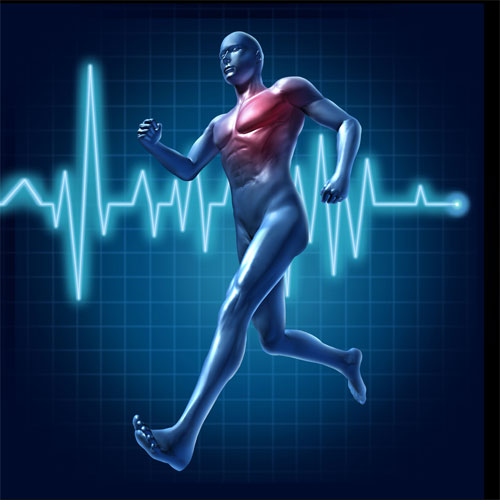

Cardio, short for cardiovascular exercise, is any movement that gets your heart rate up and increases blood circulation throughout the body. There are various forms and methods of performing cardio exercise - all which will have specific benefits and guidelines.
Most individuals performing cardio are using it as a way to burn off excess calories and since you are moving the body, it is going to increase the need for energy. Some forms are slightly better when strictly speaking of fat loss but all cardio, regardless of form will burn off calories. Since fat loss does depend on calories burned versus calories consumed it is a step in the right direction.
